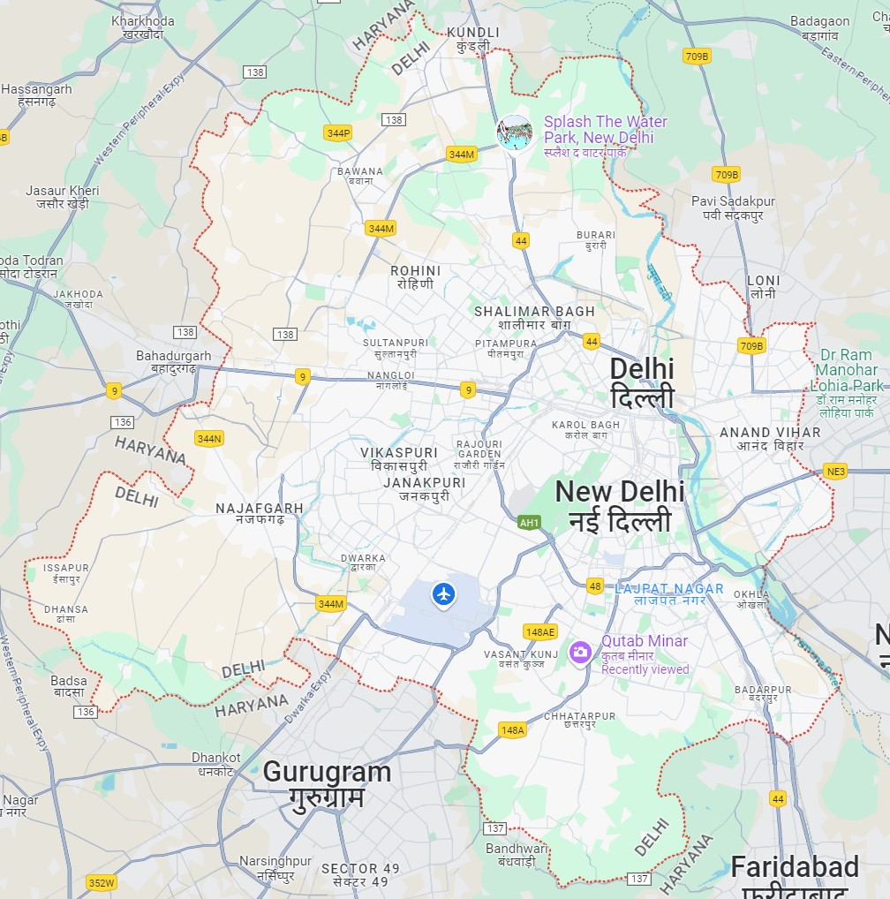

Delhi
Delhi’s cultural life exhibits a unique blend of the traditional and cosmopolitan styles. The city is dotted with numerous museums, historic forts and monuments, libraries, auditoriums, botanical gardens, and places of worship. Complementing such traditional institutions are the ever-changing urban commercial and leisure centres, with their privately held contemporary art galleries, cinema multiplexes, bowling alleys and other sports venues, and restaurants serving a variety of Indian and international cuisines.
Also reflecting Delhi’s cultural and stylistic diversity are its numerous fairs and festivals. These include an annual film festival as well as many sorts of trade and book fairs. The various religious groups in Delhi contribute to an ongoing succession of religious festivals and celebrations.
HUMAYUN TOMB
A UNESCO World Heritage Site, Humayun’s Tomb is a stunning piece of Persian architecture built in the Mughal era. It was commissioned in 1526, nine years after Humayun’s death, by his widow Hamida Banu Begum. This beautiful monument is made of red sandstone.
The tomb is in the centre of Charbagh-style of gardens with pools that are connected to canals. It has two entrances: a southern side and a western side. The high central arch and the octagonal shape of the structure are important aesthetics of Mughal architectures.
QUTUB MINAR
This 73-meter high tower was built by Qutub-ud-Din Aibak in the year 1193. Built after the defeat of Delhi’s last Hindu ruler, the Qutub Minar was constructed to celebrate the Muslim supremacy in Delhi. It is the highest tower in India, with five levels and projecting balconies. The first three levels are made up of red sandstone and the last two of marble and sandstone.
The Qutub Minar has three different types of architectural styles. The construction of the minar was started by Aibak (who only made the basement). Later, Iltutmish added on three stories and then it was completed by Firoz Shah Tuglak, who constructed the last two stories. Quwwat-us-Islam Mosque, the first mosque ever to be built in India, is situated here.
RED FORT
This enormous red sandstone fort is synonymous with Delhi and is a testimony of the glory of the Mughal Empire. Built in 1638 by Shah Jahan, it took around ten years to be completed.
A UNESCO World Heritage Site, the Red Fort is octagonal in shape with walls adorned with flowers and calligraphy, typically in the style of beautiful Mughal era architecture.
JAMA MASJID
The Jama Masjid is India’s largest mosque. With minarets on all four sides that reach the skies, Jama Masjid, Emperor Shah Jahan’s last architectural indulgence, was commissioned in 1650 and took six years to be built. The enormous courtyard of the Jama Masjid can hold around twenty-five thousand worshippers.
The main prayer hall has a beautiful white ceiling and the entrance is decorated with high rising arches. There is a pool right in heart of the mosque that is used by the faithful for cleansings before prayer. Note that visitors are advised to dress modestly (shorts, short skirts or sleeveless tops are NOT allowed). Since it is a house of prayer, it is necessary to remove your shoes at the entrance.
OLD FORT
The Purana Qila, one of the oldest forts in India, was built by the Afghan King, Sher Shah Suri. The fort has three entrances: the Bada Darwaza, Humayun Gate and the Talaqi Gate. All the gates are double storey structures that were constructed using sandstone.
The north and the south gate have beautiful pavilions, balconies and umbrellas that add to the beauty and the grandeur of the fort.
JANTAR MANTAR
Jantar Mantar was constructed by Maharaja Jai Singh of Jaipur in 1724. It is essentially an observatory that was made with the purpose of accumulating astronomical occurrences and information to help predict the time and the movements of celestial bodies such as the sun, moon and other planets.
The Jantar Mantar has various instruments such as the Samrat Yantra, Jayaprakash Yantra and the Misra Yantra that helped with predictions. After the construction of the Jantar Mantar in Delhi, Raja Jai Singh constructed similar structures by the same name in Jaipur, Mathura, Ujjain and Varanasi. For lovers of astronomy, the Jantar Mantar is a great place to visit.
THE NATIONAL ZOOLOGICAL PARK
The National Zoological Park Delhi, commonly referred to as the Delhi Zoo, is a historic monument and a popular tourist attraction in the heart of New Delhi, India. Located near the Old Fort (Purana Qila) and Mathura Road, the zoo is a testament to India’s dedication to wildlife conservation and public education.
The seeds for the creation of the Delhi Zoo were planted in the early 1950s with a vision to offer a serene retreat within the bustling capital city of India. The construction of the zoo commenced swiftly, and it officially opened in 1959 after three years of intensive development of essential infrastructures like roads, waterways, and animal enclosures.
AKSHARDHAM MADNIR
The Akshardham Mandir was designed by BAPS Swamis and Virendra Trivedi, a member of the Sompura family.[10][11][12] It is entirely constructed from Rajasthani pink sandstone and Italian Carrara marble. Based on traditional Hindu architectural guidelines (Shilpa shastras) on maximum temple life span, it makes no use of ferrous metal. Thus, it has no support from steel or concrete.[13] The architecture is inspired by the Māru-Gurjara architecture style.
The mandir also consists of 234 ornately carved pillars, nine domes, and 20,000 murtis of swamis, devotees, and acharyas.[15] The mandir also features the Gajendra Pith at its base, a plinth paying tribute to the elephant for its importance in Hindu culture and India's history. It contains 148 life sized elephants in total weighing a total of 3000 tons.